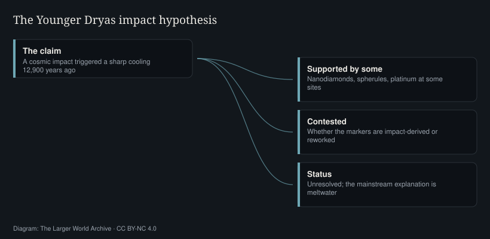

The claim
The Younger Dryas impact hypothesis, proposed in 2007, holds that a large comet or asteroid broke up and struck the Laurentide ice sheet around 12,800 years ago. The proposed consequences: a shutdown of the Atlantic circulation, a return to glacial conditions for about 1,200 years, extinction of many large mammals, and the end of the Clovis hunting culture.
Maps, diagrams and images

The supporting evidence offered includes a black carbon-rich sediment layer ('black mat') at many sites, nanodiamonds, magnetic microspherules, platinum anomalies, and meltglass.
The problems
Replication of the markers. Independent groups have failed to find nanodiamonds and spherules at the same layers, and some reported markers turn out to be common in ordinary sediments.
Dating. A Bayesian analysis of many sites (Kennett et al., 2015) argued for synchroneity around 12,835–12,735 cal BP; critics note that the sites are few, the dating uncertainties large, and the selection of sites not independent of the hypothesis.
No crater. No impact structure of the right age and size has been found. The proposed Greenland Hiawatha crater is much older than the Younger Dryas.
The extinctions are not synchronous. Megafaunal losses played out over thousands of years and at different times on different continents, which is hard to reconcile with a single hemispheric event.
Established: the Younger Dryas cooling itself, its abruptness, and its likely link to freshwater forcing of the Atlantic circulation.
Contested: whether an impact occurred, and whether it mattered. A 2023 review in Earth-Science Reviews argued the hypothesis is comprehensively refuted; proponents dispute the review's selection of evidence.
Fringe version: a global cataclysm that destroyed an advanced civilisation, encoded in myths. That is not supported by any archaeological evidence, and it is the version that circulates most widely.
The archive labels this live debate because serious scientists still publish on both sides, while flagging the civilisation-destroying version as fiction.
Why it is in the archive
Because it is a genuine scientific dispute that has been absorbed into a much larger pseudo-historical story, and the two need separating.
It connects to Göbekli Tepe and flood myths, both of which are frequently dragged into the comet narrative without warrant.
Sources for this page
- Wikipedia, “Younger Dryas impact hypothesis” — claims and criticismsen.wikipedia.org
- Kennett et al. (2015), PNAS — Bayesian chronology of the boundarydoi.org
- Holliday et al. (2023), Earth-Science Reviews — refutation of the hypothesisdoi.org
- Wikipedia, “Younger Dryas” — the cooling event itselfen.wikipedia.org
Open resources on this topic
- PapersOpen-access articles: DOAJ · PubMed Central · Internet Archive Scholar
- BooksPublic-domain and borrowable copies: Open Library · Project Gutenberg · Google Books · Internet Archive
More images
Cite this page
Momin, S. (2026). The Younger Dryas Impact. The Larger World Archive. https://drsamonline.github.io/LARGE_GLOBE/younger-dryas.htmlMomin, Sohil. “The Younger Dryas Impact.” The Larger World Archive, 2026, https://drsamonline.github.io/LARGE_GLOBE/younger-dryas.html.Momin, Sohil. “The Younger Dryas Impact.” The Larger World Archive, 2026. https://drsamonline.github.io/LARGE_GLOBE/younger-dryas.html.@misc{the2026younger,
author = {Momin, Sohil},
title = {The Younger Dryas Impact},
year = {2026},
howpublished = {The Larger World Archive},
url = {https://drsamonline.github.io/LARGE_GLOBE/younger-dryas.html},
note = {Last reviewed 20 November 2026}
}Last reviewed 20 November 2026 · Corrections policy · this page is not peer reviewed